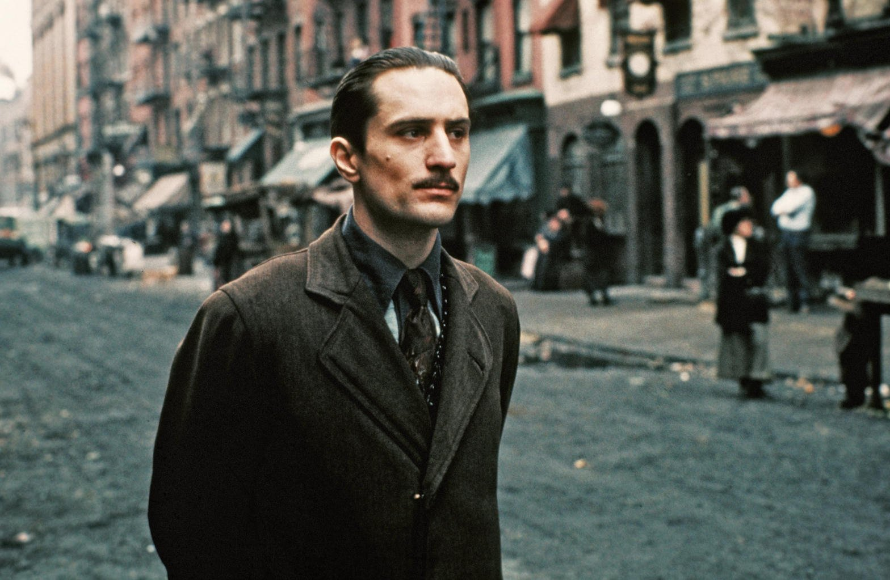
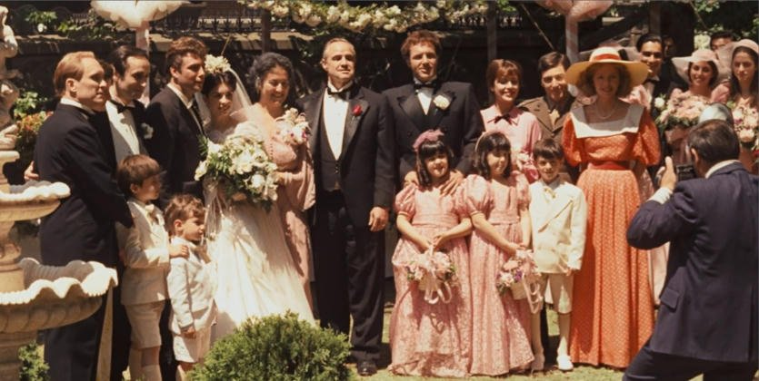
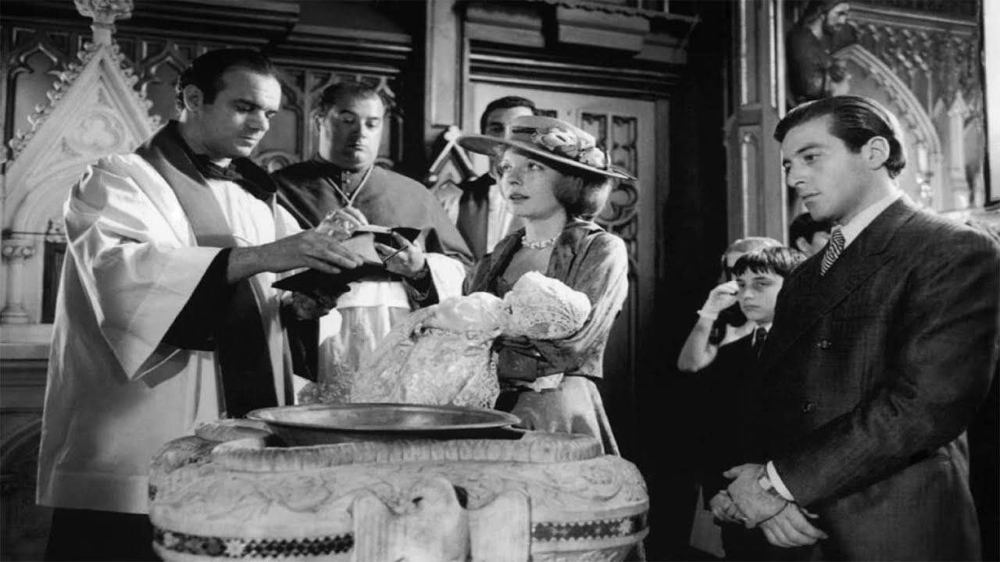
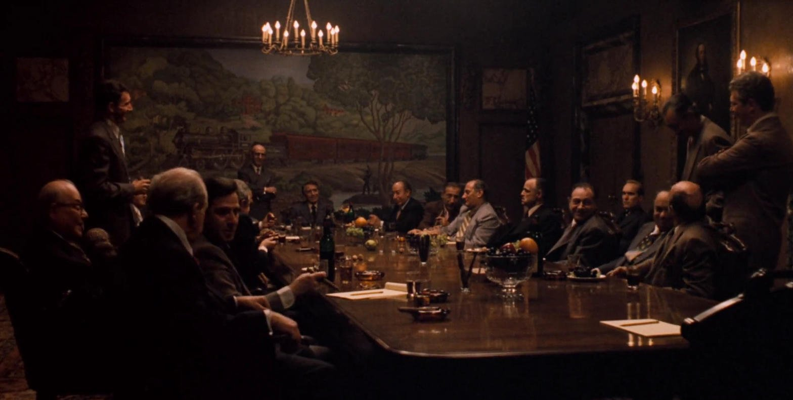
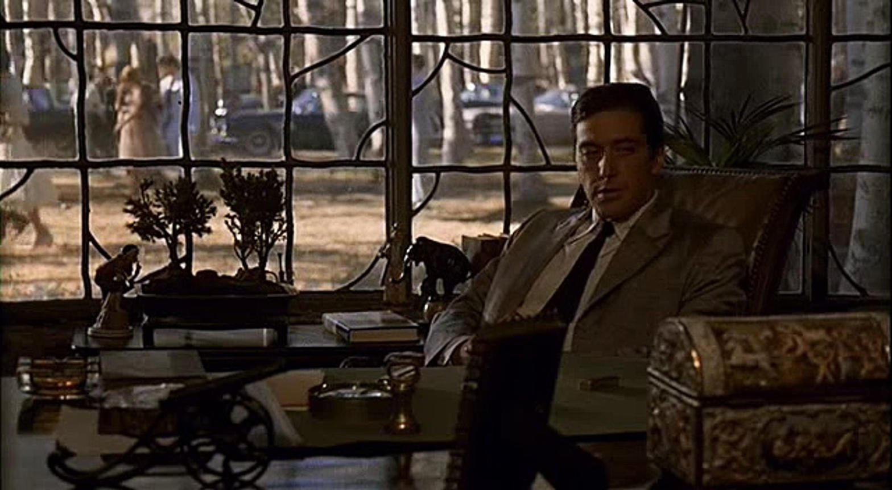

1901 — 1997
《教父》三部曲笔记里的 14 个年份。
 1901 · 维托出生
1901 · 维托出生
1917 · 西西里街头
1945 · 康妮的婚礼 1945 · 门在凯面前关上
1945 · 门在凯面前关上 1946 · 橙子滚落街头
1946 · 橙子滚落街头 1946 · 餐厅里的两枪
1946 · 餐厅里的两枪
1955 · 洗礼与清算
1955 · 五大家族会议
1958 · 太浩湖办公室 1959 · 弗雷多的背叛
1959 · 弗雷多的背叛1959 · 楼梯上的崩溃
 1979 · 回到纽约
1979 · 回到纽约 1997 · 独自死去
1997 · 独自死去2026 · 这 827 行笔记
散落
—
14 张影像
1901
2026